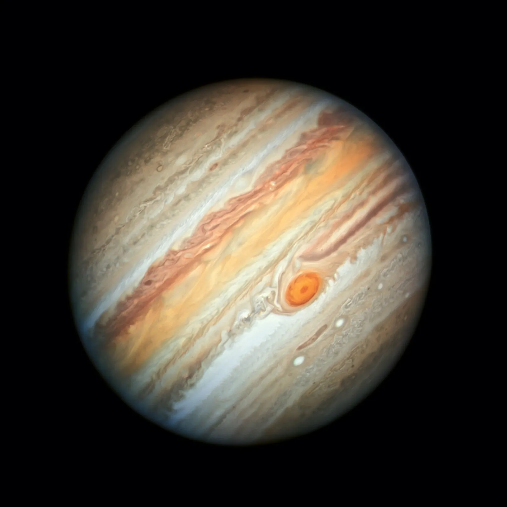

Mars: The Red Planet
Mars is a dusty, cold, desert world with a very thin atmosphere. The rusty red color comes from iron oxide (rust) on its surface.

A Comprehensive Guide to our Solar System
Mars is a dusty, cold, desert world with a very thin atmosphere. The rusty red color comes from iron oxide (rust) on its surface.

Jupiter is the largest planet in our solar system. Its iconic Great Red Spot is a giant storm bigger than Earth.
Made of billions of chunks of ice and rock.

Adorned with a dazzling system of icy rings, Saturn is unique. It is a massive ball made mostly of hydrogen and helium.
Has 146 recognized moons, the most in the solar system.

Mercury

Venus

Neptune

Uranus
Mars
Venus is the hottest planet in our solar system. Its thick atmosphere traps heat in a runaway greenhouse effect.
Mercury is the smallest planet and closest to the Sun. It has a barren, rocky surface covered with craters.
Dark, cold, and whipped by supersonic winds, Neptune is the most distant planet in our solar system.
Uranus rotates at a nearly 90-degree angle from the plane of its orbit. This makes it appear to spin on its side.